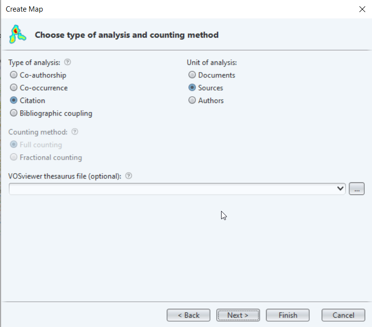

3.5 Journal analysis with LENS
A popular use for VOSviewer is using it to find the best possible journals to publish your research or journals you might want to follow to keep up with the field. If you have a specific topic, it may not always be clear what journal best suits your research. Sending it to the wrong journal might give you a rejection note that your research does not fit the journal profile or - if they do accept - might not lead to the visibility within the research community you hoped for. A Nature editor once warned us that publishing in their journal might be bad if you have something that is of limited interest to the wider community as it might be seen as to experimental or even completely overlooked by peers.
In this tutorial we have chosen to find out what journals might be of interest for industrial ecology, a subfield of the environmental sciences. As environmental sciences are relatively new and multidisciplinary, journals from this field may not all be available in Web of Science. This is why we use an alternate scholarly database that indexes a broader collection of journals: LENS. LENS is a vary capable database as it indexes a large amount of scholarly works fulltext and uses artificial intelligence (formerly integrated in Microsoft Academic) to complement the information with document type, topic, et cetera.
- Go to https://www.lens.org and choose for searching within scholarly works. As keywords we use “circular econom*” OR “industrial ecology” OR “life cycle anal*” which gives us around 15k results. As Document Type we select ‘Journal Article’ from the left menu, leaving us with around 12k articles.
img
To export all results, we need to create an account at LENS. If you limit the search by specifying (topic, a more strict keyword, time range) you can export 1,000 items without account.
With the account I have exported all data as CSV. To do so, go to the small ‘Export button’ underneath the top navigation bar that says ‘Scholarly Works’ (this database has so many options that it may be hard to find). As parameters you can use something like the screenshot:
img
If there is a large number of articles, LENS will send you an email to download the CSV. This usually takes just a few minutes.
Go to VOSviewer and choose Create -> ‘Create a map based on bibliographic data’. In the next screen choose ‘Read data from bibliographic database files, select the tab ’Lens’ and use your downloaded CSV.
In the next screen we choose to analyze by Citations and Sources (in our case journals as we have articles published in journals). This way we will see connections between the journals. 
The next screen asks us how many documents should be minimally in each source. We leave it at 5 for now to give a broad spectrum, but for a large set you can increase this number as you see fit. Click finish to create the visualization.
You will now see a map that is dominated by two large journals containing many articles in the field: ‘Russian journal of occupational health and industrial ecology’ and the ‘Journal of industrial ecology’. This is to be expected as we are searching all fields: all articles from journals with ‘industrial ecology’ in the name will be in our search. If this proofs problematic for your search, limit the search to title and abstract or similar fields. Zooming in gives us a much better overview with quite a lot of specific clusters due to the generic keywords we used.
Have a look at the items in the left bar to see what clusters there are. Some noteworthy are:
- brown with the ‘Russian journal of occupational health and industrial ecology’, which seems to be mainly about radiation and nuclear aspects.
- blue with the ‘Journal of industrial ecology’ which seems to have a clear focus on general aspects, business and economics. This seems to be in accordance to the journals own words: ‘publishes sustainability and circular economy research which considers the relationship between the environment and the socio-economic system’.
- red, which is highly focused on chemical aspects and includes journals about catalysis. Hovering over a specific journal will give you citation links between the clusters (both ways). Thus you will notice that for example the communication between the socio-economic cluster in blue to the red chemistry cluster is very little. While the red cluster does cite a lot with clusters about production or health hazards. Considering these aspects might help you find the right cluster for your specific article.
10. Once you have an idea of where to find your journal within the clusters, it is time to focus on which journal might be the fit for you. Go to the tab ‘Overlay visualization’ in VOSviewer. With the average publication year, you can see the newer - up and coming - journals. However, if we change the visualization to use the average normalized citation, we can see what journal is most popular (avoiding the word impact as popular does not give an opinion on quality) with our specific search terms.
For example, we can see that the Journal of industrial ecology is quite average in number of citations at 0.97. The Russian journal that also had a big output has 0.08 as avg. norm. citation. Resources, Conservation and Recycling in the same cluster as the ‘Journal of industrial ecology’ scores a 2.04, which means it is a little more popular if it fits your specific research. (In the image blue means a low number of average citations, while yellow is a high number of average citations.)
img
The size of each circle gives the number of articles within our set that has been published in said journal. The larger the circle, the more the journal focuses on this type of research (which means you have a bigger chance of publishing there).
- Of course we encourage you not to look only at this analysis. Check out the website of the journal and its focus. And check out the possibilities for Open Access you have at the journal via Journal Browser